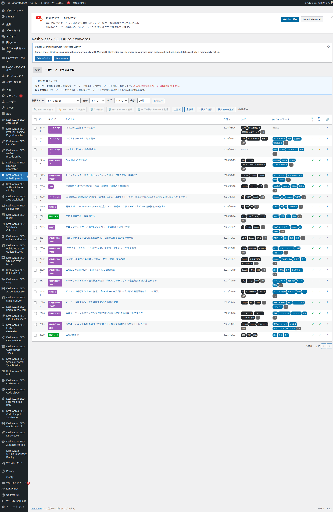
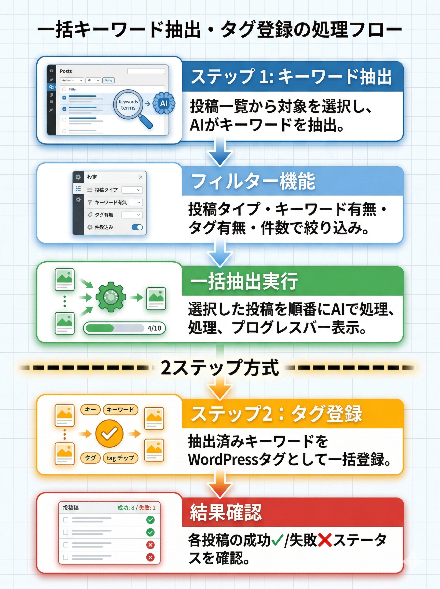

一括キーワード生成＆タグ登録
複数の投稿に対してAIキーワード抽出と、WordPressタグへの一括登録を行う機能を解説します。
このプラグインは「ステップ1: キーワード抽出」→「ステップ2: タグ登録」の2ステップ方式です。キーワード抽出だけ行い、タグ登録は後から選択的に実行できます。
一括生成画面の概要
フィルター＆ソート
投稿タイプ・キーワード状態・タグ状態・件数で絞り込み。各列でソート可能
一括AI抽出
選択した投稿を順番にAI処理。プログレスバーとリアルタイムログ付き
タグ一括登録
抽出済みキーワードをWordPressタグとして一括登録
一括生成画面

フィルター機能
| フィルター | 選択肢 | 説明 |
|---|---|---|
| 投稿タイプ | すべて / 個別タイプ | 対象の投稿タイプで絞り込み |
| 抽出 | すべて / 抽出済み / 未抽出 / ≥N個 / ≤N個 | キーワード抽出状態で絞り込み |
| タグ | すべて / あり / なし / ≥N個 / ≤N個 | タグ登録状態で絞り込み |
| 表示件数 | 20 / 50 / 100 / すべて | 1ページの表示件数 |
ステップ1: キーワード一括抽出
1
フィルターで対象投稿を絞り込む
2
チェックボックスまたはショートカットボタンで投稿を選択
3
「キーワード抽出」ボタンをクリック
4
プログレスバーとログがリアルタイム表示される
5
完了後、各投稿の「生成キーワード」列にキーワードが表示される
ステップ2: タグ一括登録
1
キーワード抽出済みの投稿を選択
2
「タグ登録」ボタンをクリック
3
抽出キーワードがWordPressタグとして登録される
4
「タグ」列にタグが反映される
一括削除機能
| ボタン | 動作 |
|---|---|
| タグ削除 | 選択した投稿のタグをすべて削除 |
| キーワード削除 | 選択した投稿の抽出済みキーワードを削除 |
キーワード抽出後、結果を確認してからタグ登録できるので、不要なキーワードがタグ化されるのを防げます。
